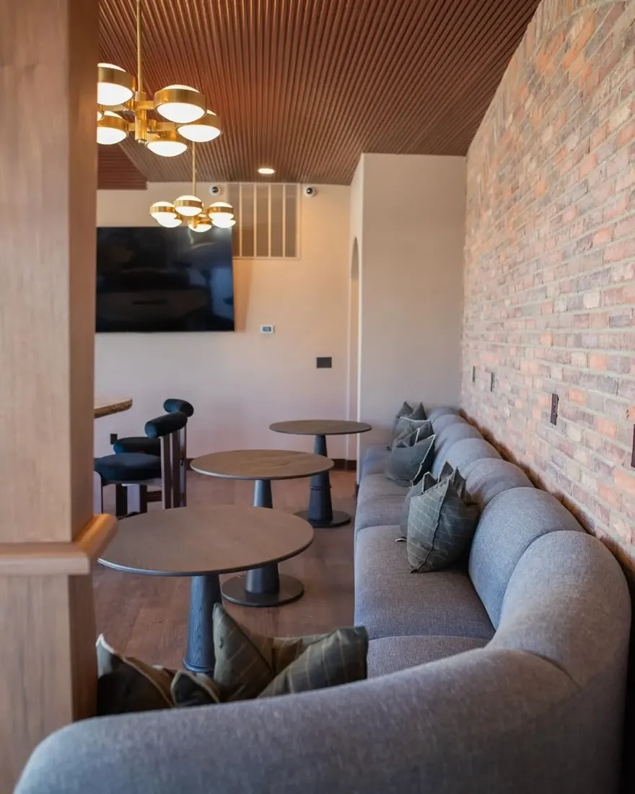

The Top 10 Best Things to Do in Louisville, Kentucky for Halloween

Fall in Louisville isn’t just leaf-peeping and bourbon tasting (though you’ll get plenty of that too) — when Halloween rolls around, the city really gets spooky. Here’s your ultimate guide to the 10 best Halloween-friendly activities in and around Louisville, perfect for locals and visitors alike. And stick around—there’s a fun local twist at the end you won’t want to miss.
1. Jack O’Lantern Spectacular at Iroquois Park
This is arguably the crown jewel of Halloween in Louisville—a winding wooded trail lit up by 5,000+ intricately carved pumpkins set to music.
Why go: It’s family-friendly but magical for all ages, with art-installation-level pumpkins and a true fall ambiance.
Tip: Go shortly after dusk for the full effect, and bring a jacket—it can get crisp under the tree canopy.
2. Haunted Houses & Spooky Walks
If you’re looking for thrills & chills, Louisville has you covered. From haunted houses like Devil’s Attic to ghost tours of historic neighborhoods.
Why go: For the adrenaline rush of a properly spooky night out.
Tip: Some attractions are intense—check age recommendations, and bring friends.
3. Danger Run — The Haunted Car Scavenger Hunt
Here’s a fun one: drive around with friends solving cryptic limerick-style clues and stopping at haunted locations around the city.
Why go: It’s interactive, social, and perfect for a group of thrill-seekers.
Tip: Form a team, designate a driver, and keep the cluebook handy.
4. Neighborhood Halloween Light Displays — Hillcrest Avenue
Hop in your car (or walk) along Hillcrest Avenue in Louisville’s Crescent Hill neighborhood, where the light displays and home decor go all-in for Halloween.
Why go: It’s festive, free, and perfect for families or casual outings.
Tip: Arrive early on trick-or-treat night for best parking; curbside candy starts around 5 pm.
5. Fall Festivals & Family-Friendly Events
Louisville caters to all ages: events like Boo at the Zoo, Pumpkins at Kentucky Kingdom, and other October happenings make Halloween fun for kids too.
Why go: If you’ve got little ones (or just want a lighter vibe), this is your scene.
Tip: Check event calendars in advance and reserve tickets if required.
6. Ghost Tours of Historic Louisville
Explore the spooky side of Louisville’s past with guided walking tours that dive into haunted history. One popular option: Old Louisville Walking Ghost Tour.
Why go: You’ll learn about the city’s folklore, architecture and secrets beneath the Halloween veneer.
Tip: Wear comfortable shoes and bring a flashlight if it’s after dark.
7. Oktober-/Fall-Themed Scenic Walks & Parks
Sometimes the best spooky outing is a crisp fall walk through one of Louisville’s beautiful parks—like Cherokee Park—where you can soak in the season. Practical Wanderlust
Why go: A calmer option that still captures the feel of fall & Halloween.
Tip: Go early evening and enjoy the cooler air and colorful leaves.
8. Bar Crawls & Adult-Only Halloween Nights
Looking for a grown-up night out? Events like the Louisville Halloween Bar Crawl deliver costumes, cocktails and party energy.
Why go: Great for couples or friend groups who want something more lively.
Tip: Book early and plan transportation—cab/ride-share options get busy.
9. Pick Your Pumpkins & DIY Photo Ops
No Halloween list is complete without a trip to the pumpkin patch. While specific farms aren’t always listed, fall guides for Louisville highlight this as a seasonal must.
Why go: It’s relaxed, photo-worthy, and perfect for all ages.
Tip: Pick up pumpkins earlier in the season for best selection; sunset light makes for great photos.
10. Creative Content: Host a Spooky Podcast Session
Here’s a unique twist: turn Halloween in Louisville into content gold by booking a podcast session in a local studio. Record a special-edition “spooky podcast” with friends, family, or co-hosts. Bonus: You can do this at half off the regular price!
Why go: It’s creative, memorable, and gives you something to keep (and share) long after October 31.
Tip: Think of a theme (ghost stories, haunted Louisville legends, fall fun), prepare your questions or narrative, and bring headphones + notes for smooth flow.
🎯 Why This List Works (and Why Google Will Like It)
- Combines local events, seasonal appeal, and unique experiences.
- Uses keyword-rich headings (Louisville, Halloween, things to do).
- Includes a creative twist (podcast session + special deal) that sets this article apart.
- Mixes family-friendly, adult-friendly, and creative options—broad audience appeal.
✅ Final Tips for an Epic Halloween in Louisville
- Plan early: many events fill up or require tickets.
- Dress in layers: fall evenings in Louisville can get chilly.
- Use local transport or ride shares, especially for nightlife or busy neighborhoods.
- Invite the creativity: costumes, photo ops, or even your own podcast segment.
- Most importantly: have fun! Whether you’re seeking spooky chills or autumn chills, Louisville has you covered.
Stay in the loop
News, openings and new episodes
Sign up with your email address to receive news and updates. No spam, and you can leave whenever you want.
Turn your hustle into a business.
Book a session, or start a membership and get a month of content filmed, edited and ready to publish.